MicroSims Gallery
Interactive educational simulations for exploring calculus concepts. Each MicroSim focuses on a single learning objective and provides immediate visual feedback.
-
Accumulation Function Explorer

Visualize how the accumulation function F(x) = integral from a to x of f(t) dt grows as x moves across the interval.
-
Additivity Property Visualization

Demonstrates how the area under a curve can be split into sub-regions that sum to the total, illustrating the additivity property of definite integrals.
-
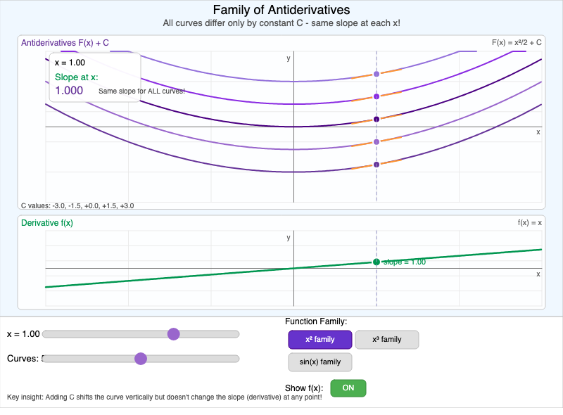
Interactive visualization showing how different values of the constant C produce a family of parallel antiderivative curves. All antiderivatives of a function differ only by a constant.
-
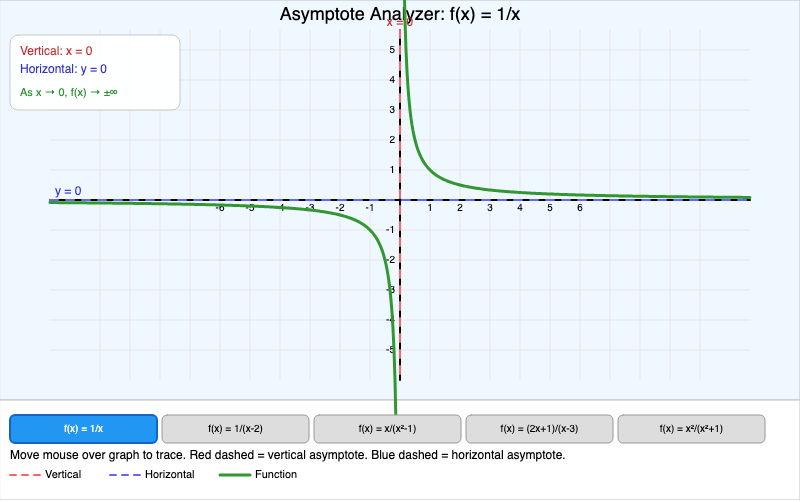
Explore vertical and horizontal asymptotes of rational functions.
-
Asymptote Behavior Visualization

Interactive visualization showing how rational functions behave near vertical asymptotes and as x approaches infinity, featuring Delta the robot traveling along curves.
-
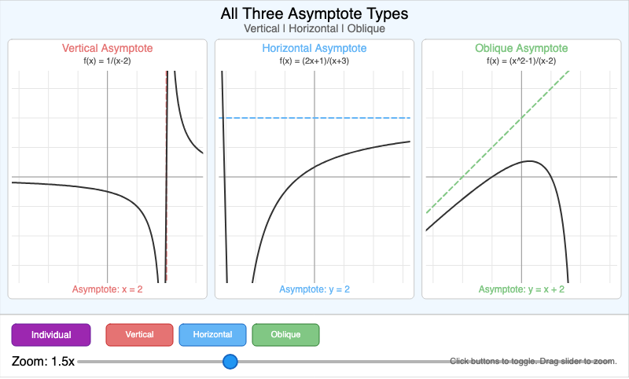
Interactive comparison of vertical, horizontal, and oblique asymptotes showing their defining characteristics and behavior.
-
Average Rate of Change Explorer

An interactive MicroSim that allows students to explore average rate of change by dragging two points along a curve and observing the secant line and slope calculation update in real-time.
-

Interactive visualization showing the average value of a function as the height of a rectangle with equal area to the region under the curve.
-
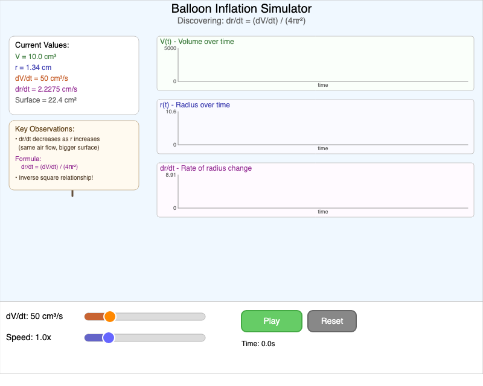
An interactive MicroSim that helps students compare how the rate of radius change varies with different radii and volume flow rates, discovering the inverse relationship between dr/dt and r squared.
-
Interactive MicroSim demonstrating how cutting squares from cardboard corners affects the volume of the resulting box. Students examine the optimization problem V(x) = x(L-2x)(W-2x).
-
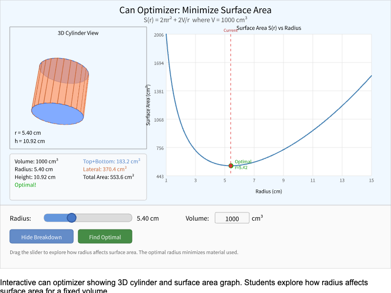
An interactive MicroSim demonstrating optimization by exploring how cylinder radius affects surface area for a fixed volume, helping students calculate optimal can dimensions.
-
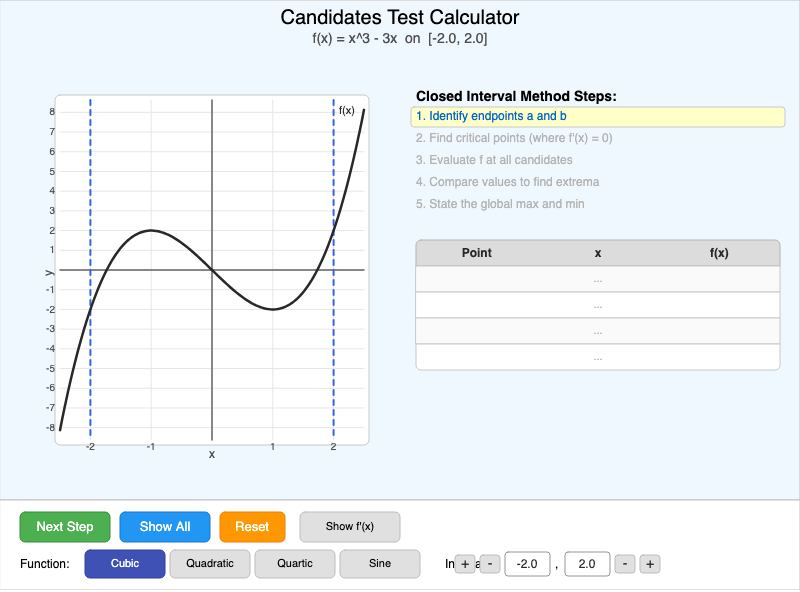
An interactive step-by-step guide through the closed interval method for finding global extrema on closed intervals.
-
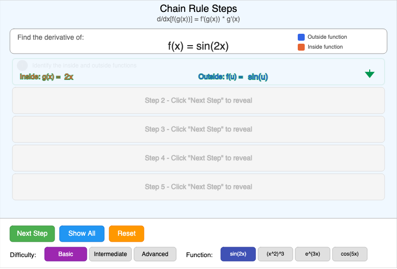
Interactive step-by-step guide to applying the chain rule for differentiating composite functions with color-coded visualization of inside and outside functions.
-
Changing Bounds in u-Substitution

Interactive visualization showing how integration bounds transform from x-domain to u-domain during u-substitution, with side-by-side graphs confirming area equality.
-
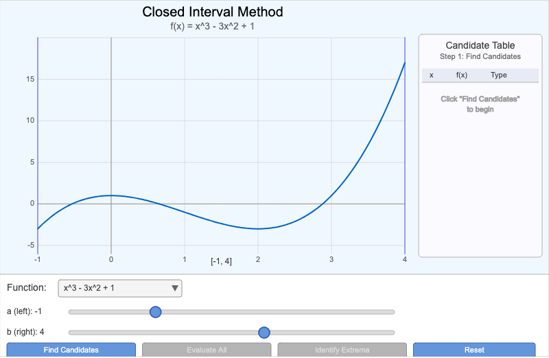
Interactive MicroSim demonstrating the Closed Interval Method for finding absolute extrema on closed intervals through a step-by-step guided process.
-
An interactive MicroSim that finds the minimum distance from a draggable target point to various curves, demonstrating that at the closest point, the connecting line is perpendicular to the tangent.
-
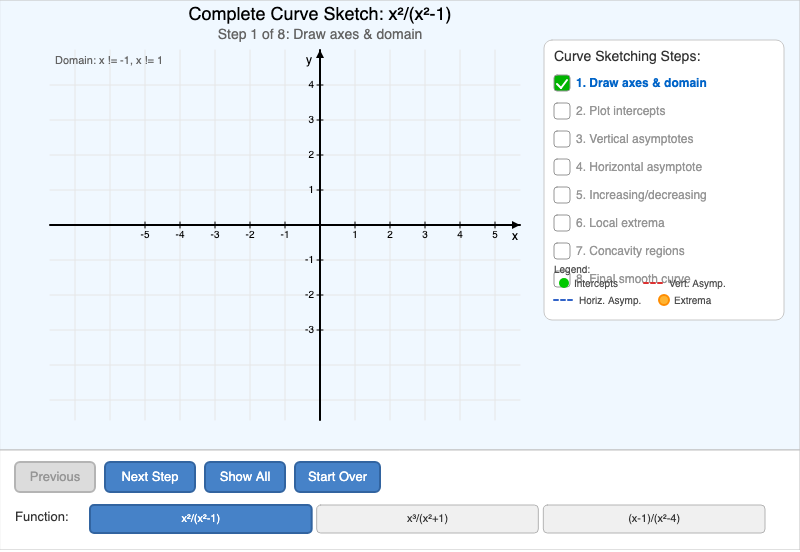
Interactive MicroSim demonstrating the complete curve sketching process, building graphs step-by-step with intercepts, asymptotes, extrema, and concavity.
-

An interactive MicroSim for training students to recognize composite functions and decompose them into inside (g) and outside (f) functions, preparing them for the chain rule.
-

Interactive MicroSim exploring concave up and concave down regions by dragging a point along a curve and observing how the tangent line slope changes in relation to the second derivative.
-
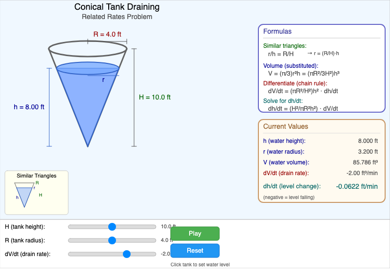
Interactive visualization of related rates for water draining from a conical tank, showing similar triangles relationship between radius and height.
-
Three Conditions for Continuity
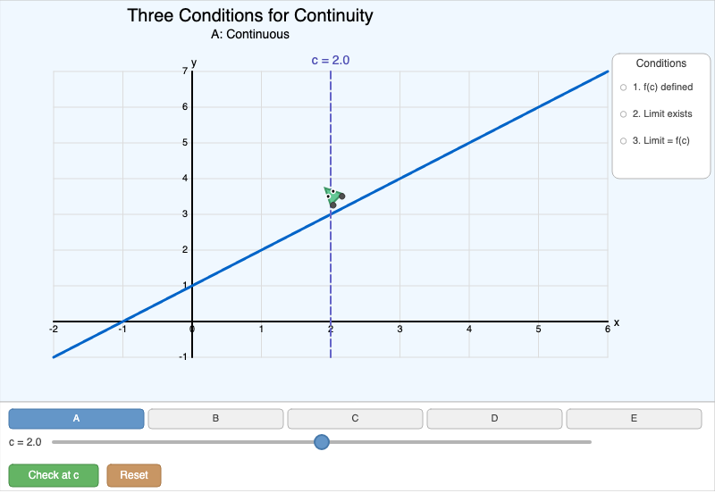
An interactive MicroSim that helps students explain how each of the three continuity conditions corresponds to visual features of a function graph.
-
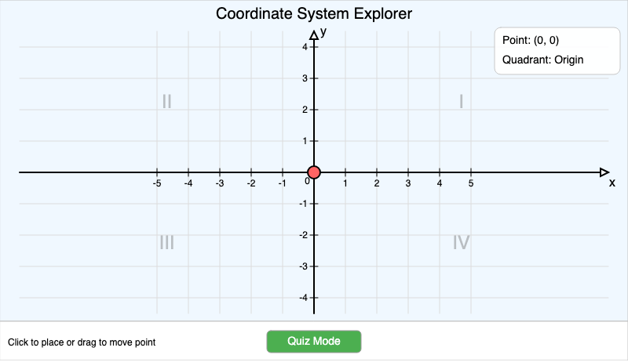
Interactive exploration of the Cartesian coordinate plane with point placement and quadrant identification.
-
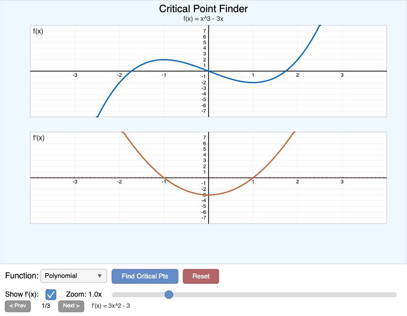
Interactive MicroSim to help students identify critical points by finding where f'(x) = 0 or f'(x) does not exist, with step-by-step solutions.
-
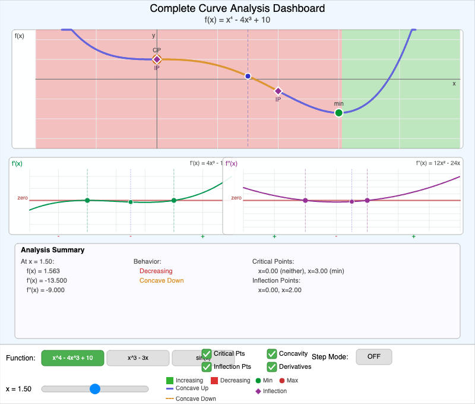
Complete interactive visualization showing how to fully analyze a function using derivatives, including critical points, inflection points, concavity, and increasing/decreasing intervals.
-

Practice estimating derivatives by drawing tangent lines on curves and comparing your estimated slope to the actual derivative value.
-

Interactive diagram showing how information about function behavior flows from the second derivative to the first derivative to the original function.
-
Derivative Interpretation Selector

Interactive MicroSim showing the derivative as both slope (graphical) and rate of change (contextual).
-

An interactive comparison tool showing the First and Second Derivative Tests side-by-side for classifying critical points.
-
First vs Second Derivative Test

An interactive MicroSim comparing the First Derivative Test and Second Derivative Test methods for classifying critical points of functions.
-
Differentiability vs Continuity
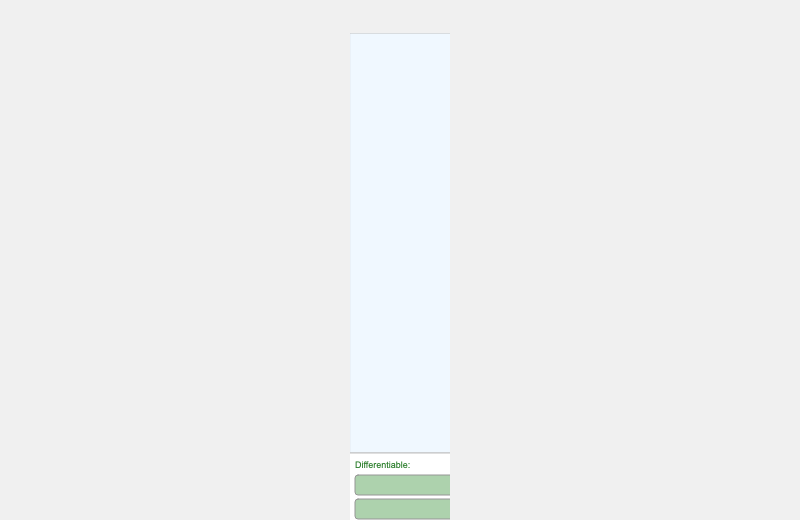
Interactive Venn diagram showing the set relationship between differentiable and continuous functions.
-

Step-through tool for checking differentiability at a point.
-
Direct Substitution Decision Tree

Interactive flowchart guiding students through the decision process for evaluating limits.
-
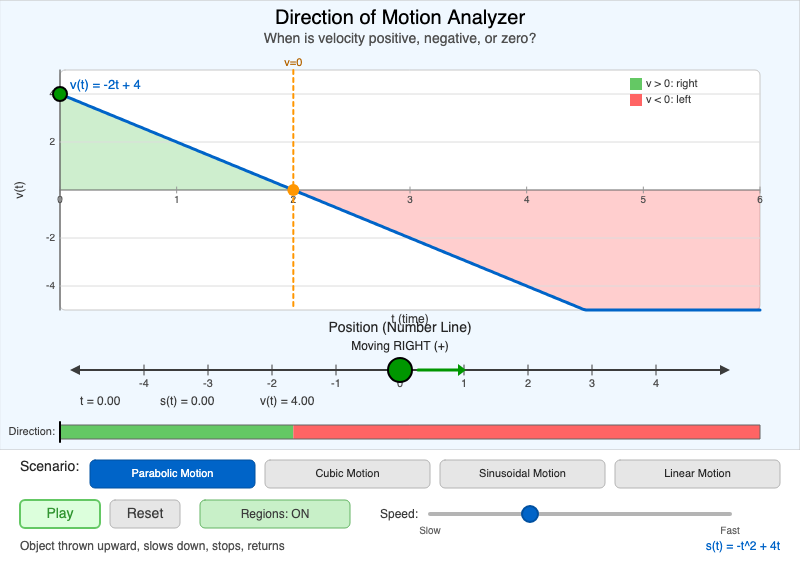
Interactive MicroSim analyzing when an object moves in positive vs negative direction based on the sign of velocity.
-
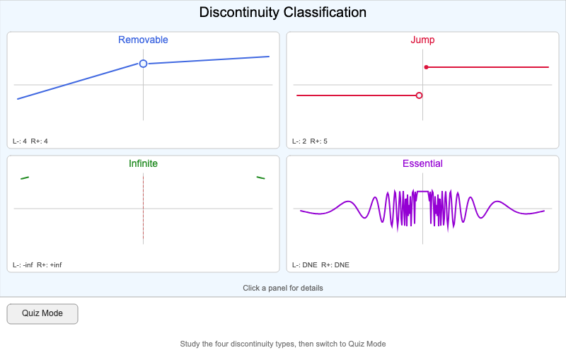
An interactive MicroSim for classifying discontinuities by analyzing limit behavior at specific points.
-

An interactive MicroSim that helps students interpret domain and range graphically by showing function graphs with highlighted number lines.
-
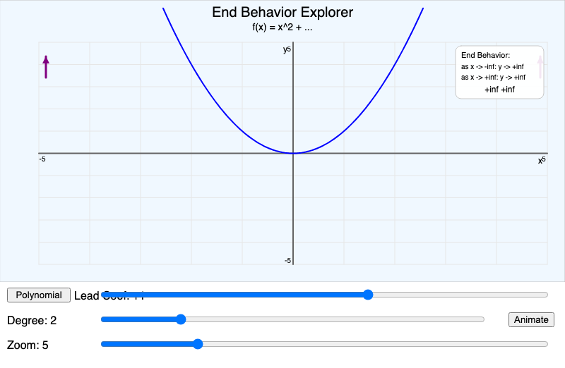
Interactive MicroSim for examining how leading term characteristics determine the end behavior of polynomial and rational functions.
-
Even and Odd Function Integral Symmetry

Interactive visualization showing how symmetry properties of even and odd functions affect definite integrals over symmetric intervals.
-
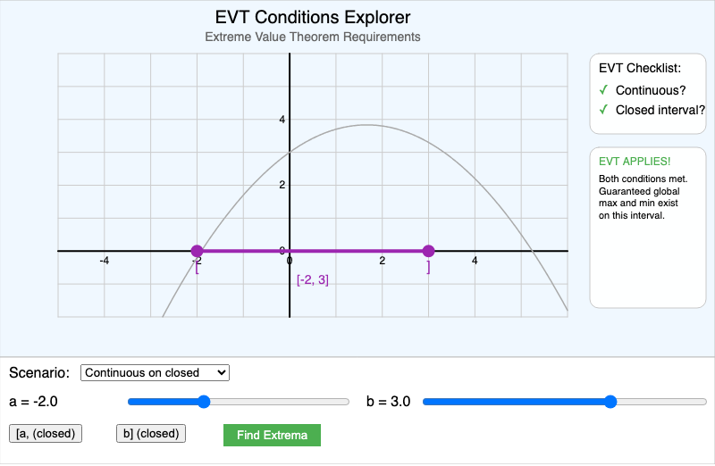
Interactive visualization showing why the Extreme Value Theorem requires both continuity and a closed interval, with counterexamples.
-
Exponential and Logarithm Relationship

Compare exponential and logarithmic functions as inverses reflected across y = x.
-
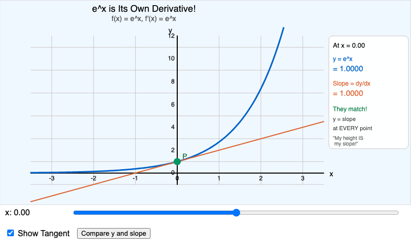
Interactive MicroSim demonstrating that the exponential function e^x is unique because its derivative equals the function itself.
-

Interactive visualization demonstrating how the integral of a^x depends on the base a and why dividing by ln(a) is necessary.
-
Global vs Local Extrema Visualizer

Interactive MicroSim helping students distinguish between global and local maxima/minima on function graphs.
-
Factoring Technique for Limits
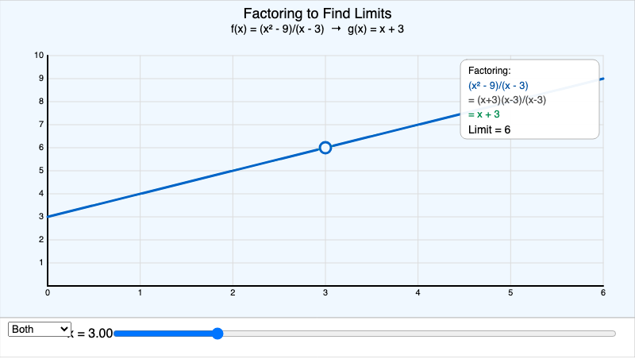
Visualize how factoring and canceling common factors reveals limit values.
-

An interactive MicroSim for visualizing and solving the classic fencing optimization problem.
-
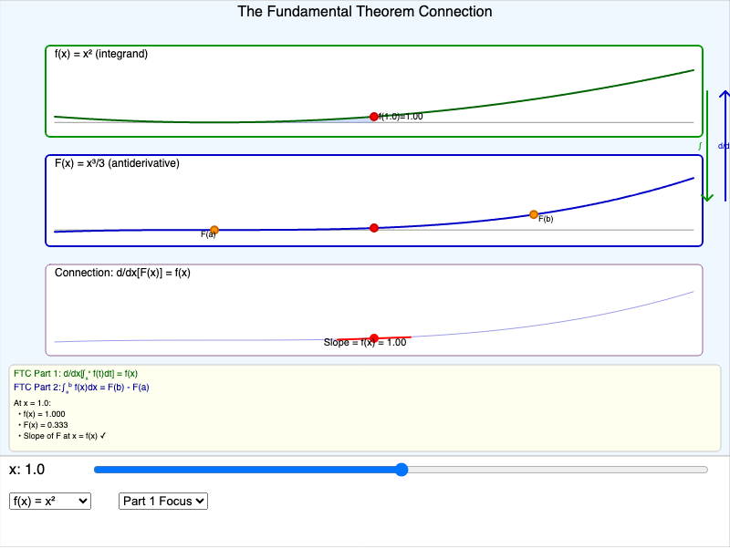
Visualize how FTC Part 1 and Part 2 are two sides of the same relationship between differentiation and integration.
-
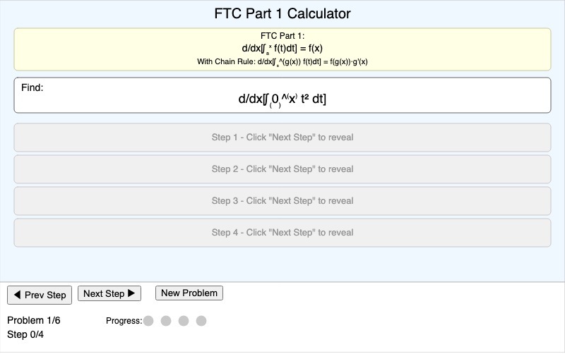
Practice applying the Fundamental Theorem of Calculus Part 1 to find derivatives of accumulation functions.
-
FTC Part 2 Step-by-Step Evaluator
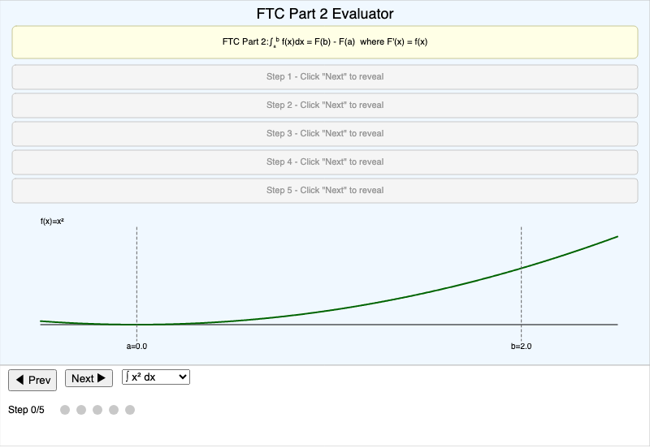
Walk through the FTC Part 2 evaluation process step by step to evaluate definite integrals.
-
Function Composition Visualizer

Interactive visualization showing how composite functions work by tracing values through two function machines in sequence.
-
Function and Derivative Comparison
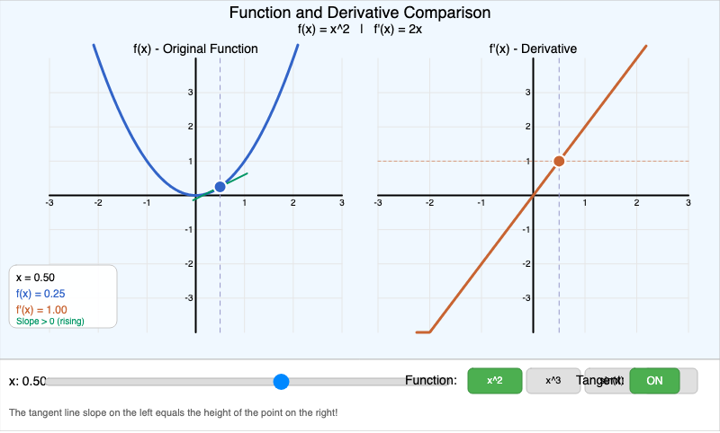
Interactive side-by-side visualization showing a function and its derivative with synchronized point and tangent line displays.
-
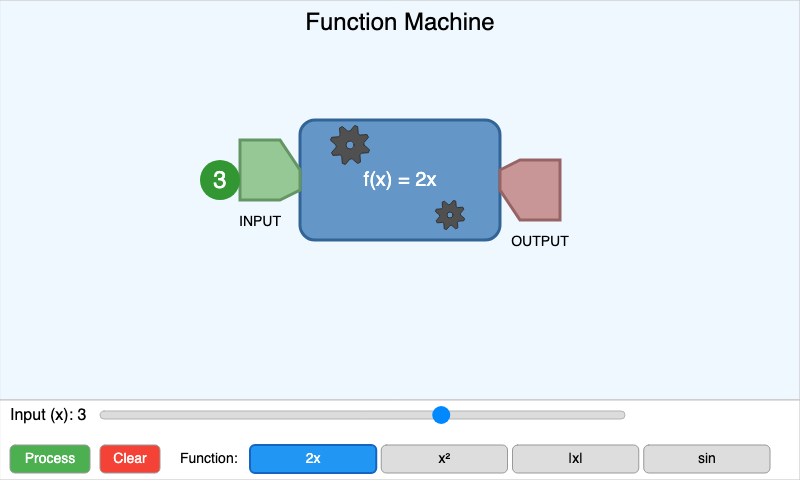
An interactive MicroSim demonstrating how functions process inputs to produce exactly one output.
-
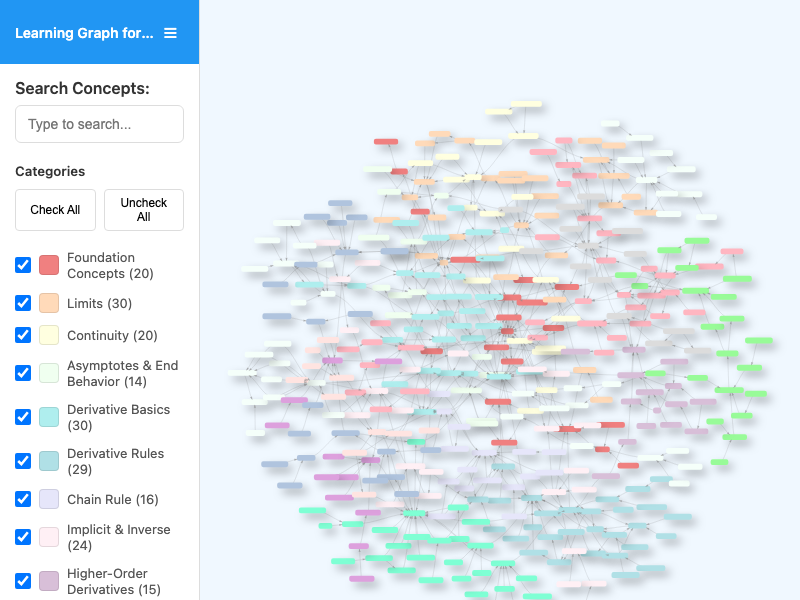
Interactive visualization of the course concept dependency learning graph.
-

Interactive visualization showing the relationship between a function and its inverse, with tangent lines demonstrating the reciprocal slope property.
-
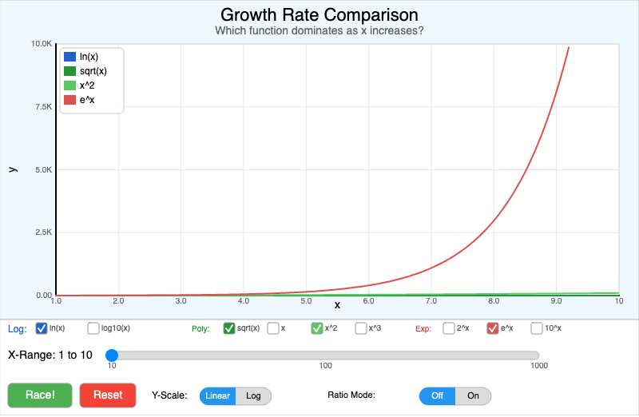
Compare growth rates of logarithmic, polynomial, and exponential functions to understand which dominates as x approaches infinity.
-

Interactive visualization of implicit curves with tangent lines.
-
Implicit Differentiation Steps

Interactive step-by-step visualization of the implicit differentiation process with color-coded terms.
-
Implicit Tangent Line Explorer

Interactive exploration of tangent lines to curves defined by implicit equations, including circles, ellipses, hyperbolas, and the Folium of Descartes.
-
Integration Strategy Decision Flowchart

An interactive decision tree that guides students through choosing the right integration technique.
-

Interactive tool to verify integration results by differentiating the proposed antiderivative and comparing to the original integrand.
-
Derivative of Inverse Functions

Interactive visualization showing geometrically why the derivative of an inverse function equals the reciprocal of the original derivative.
-
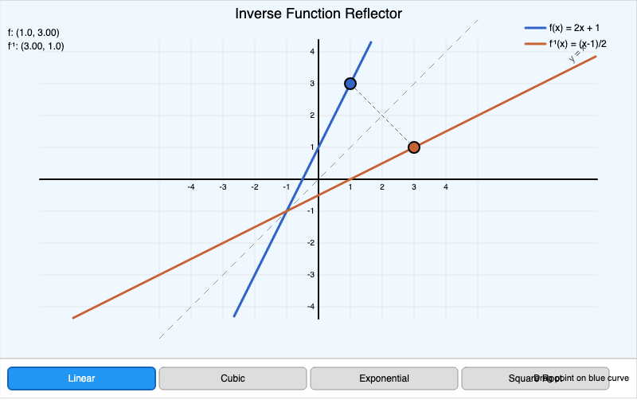
Compare functions and their inverses graphically, seeing the reflection relationship across y = x.
-

Interactive flashcard-style quiz to help students memorize and apply the six inverse trigonometric derivative formulas.
-

Visualize why domain restrictions are necessary for inverse trigonometric functions using the horizontal line test.
-
Inverse Trig Integral Pattern Matcher

Match integrands to their corresponding inverse trigonometric antiderivative types through interactive pattern recognition.
-
Intermediate Value Theorem Visualization
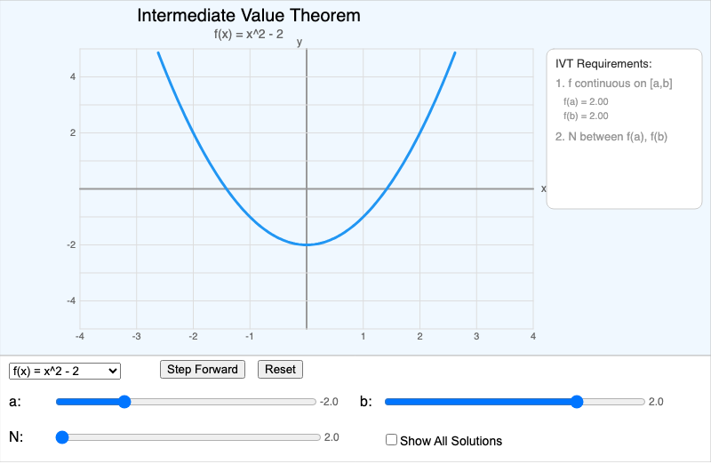
Interactive visualization demonstrating the IVT with Delta robot traveling along continuous functions.
-

Interactive visualization of the classic related rates ladder problem.
-
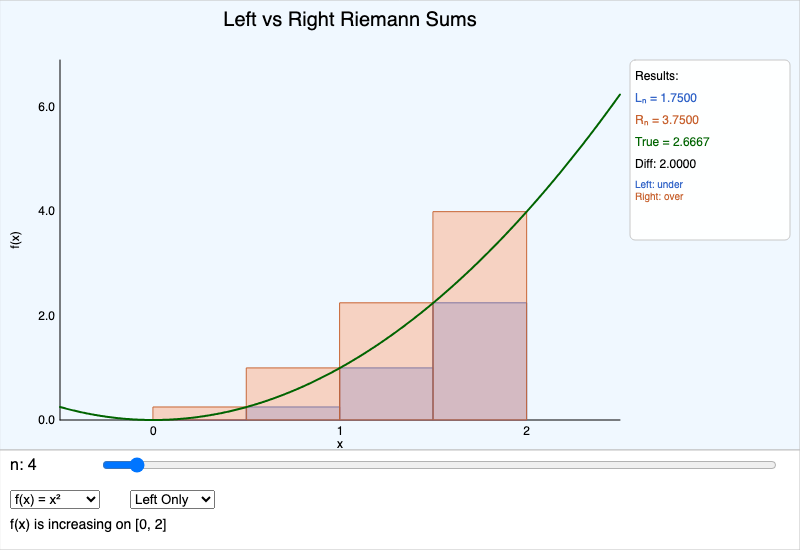
Interactive comparison of left and right Riemann sum approximations showing when each method overestimates or underestimates.
-

Interactive visualization showing how L'Hospital's Rule transforms indeterminate limits.
-
Interactive practice problems for applying limit laws to evaluate limits algebraically.
-
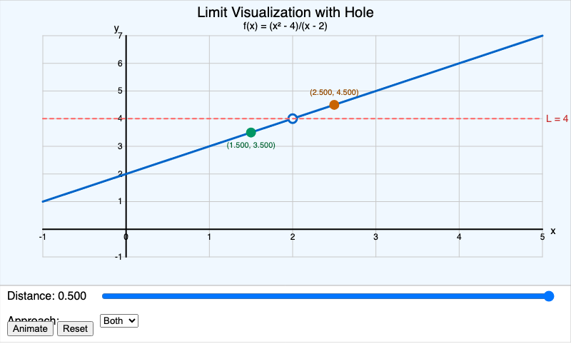
Interactive visualization showing how function values approach a limit even when the function has a hole.
-

Practice reading left-hand, right-hand, and two-sided limits from graphical representations.
-
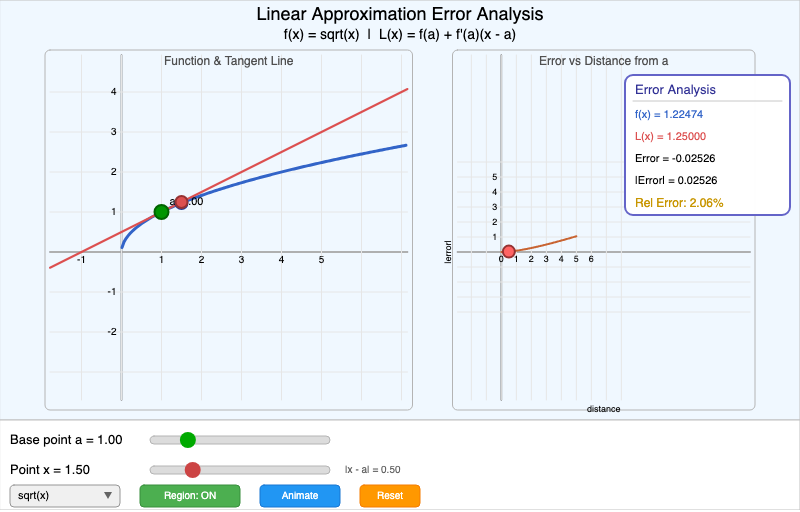
Assess the accuracy of linear approximations by comparing the approximation to the actual function value.
-
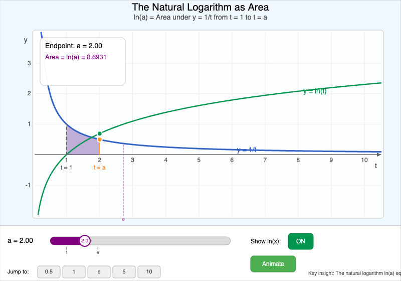
Interactive visualization showing the natural logarithm as the accumulated area under the curve y = 1/t.
-
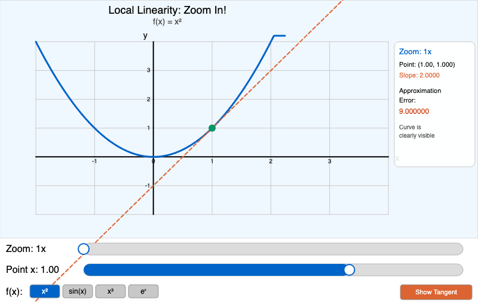
Interactive MicroSim demonstrating how curves appear linear when zoomed in sufficiently.
-
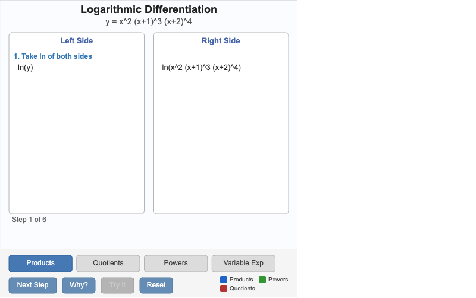
Step-by-step guide through the logarithmic differentiation process with color-coded transformations.
-

Interactive visualization for calculating and interpreting marginal cost, revenue, and profit.
-
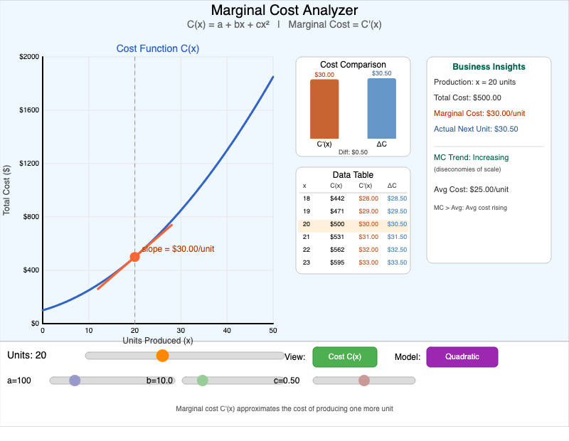
Interactive MicroSim that calculates and interprets marginal cost as the derivative of the cost function.
-
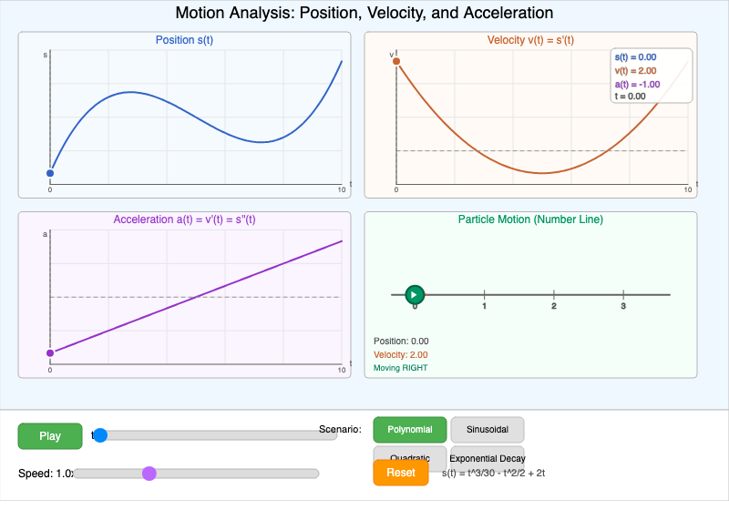
Interactive visualization showing the relationship between position, velocity, and acceleration.
-
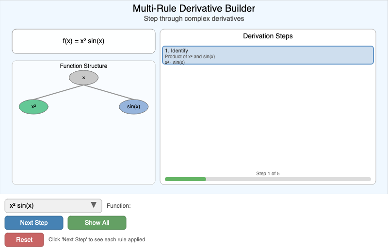
An interactive step-by-step tool showing how multiple derivative rules combine to differentiate complex functions.
-

Interactive visualization of the Mean Value Theorem showing secant lines, tangent lines, and the values of c.
-

An interactive visualization of nested function differentiation using the chain rule.
-
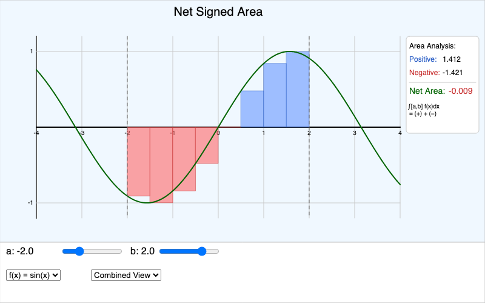
Demonstrates that definite integrals compute net signed area, with regions below the x-axis contributing negatively.
-
Non-Differentiable Points Gallery
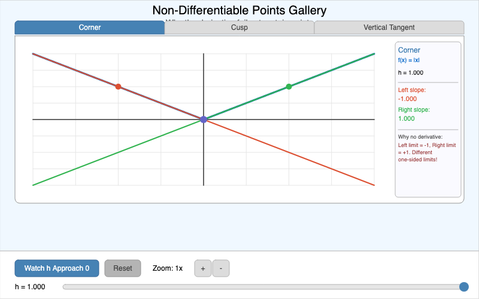
Interactive gallery showing the three types of non-differentiable points with animated secant lines.
-

Interactive visualization showing how left and right secant lines approach a point.
-

Compare left-hand and right-hand limits to determine whether a two-sided limit exists.
-
Optimization Problem Setup Flowchart
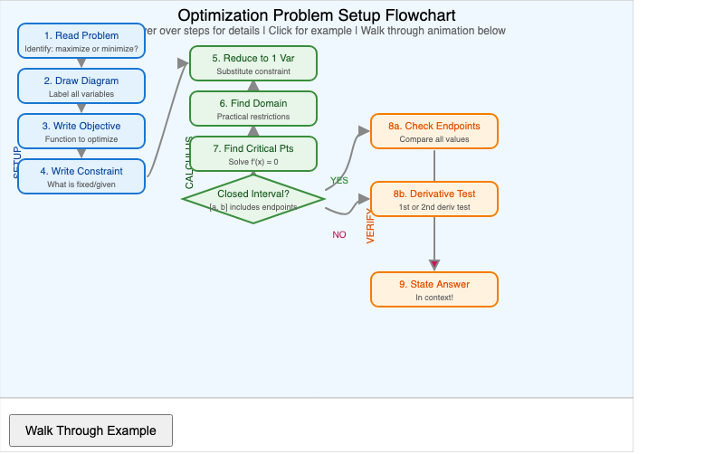
An interactive flowchart showing the step-by-step process for setting up optimization problems.
-
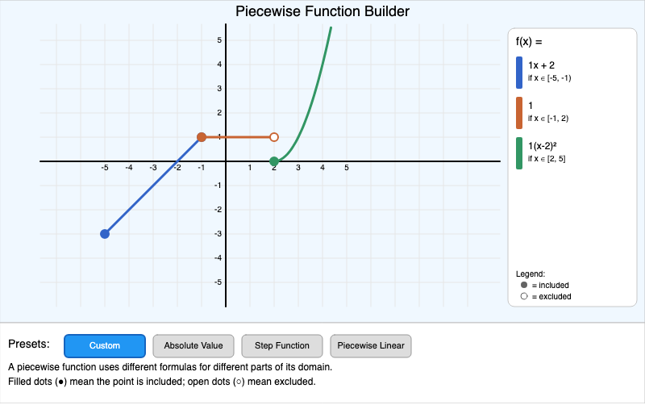
Construct piecewise functions by defining different rules for different domains.
-

Interactive MicroSim for determining whether piecewise functions are continuous at boundary points.
-

Examine how polynomial degree and leading coefficient affect graph shape and end behavior.
-

Interactive step-by-step guide to integrating polynomial functions using the power rule.
-
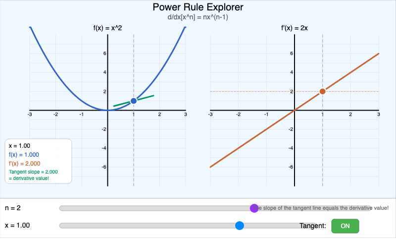
Interactive visualization of the power rule showing f(x) = x^n and its derivative f'(x) = nx^(n-1).
-

Interactive visualization showing the relationship between derivative and integral power rules.
-
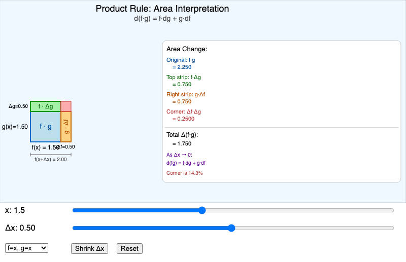
Interactive geometric visualization of the product rule showing why d(fg) = fdg + gdf.
-

Interactive MicroSim showing the relationship between revenue, cost, and profit functions.
-

Interactive dashboard for interpreting derivative values in context across multiple real-world scenarios.
-
Four Riemann Sum Methods Comparison
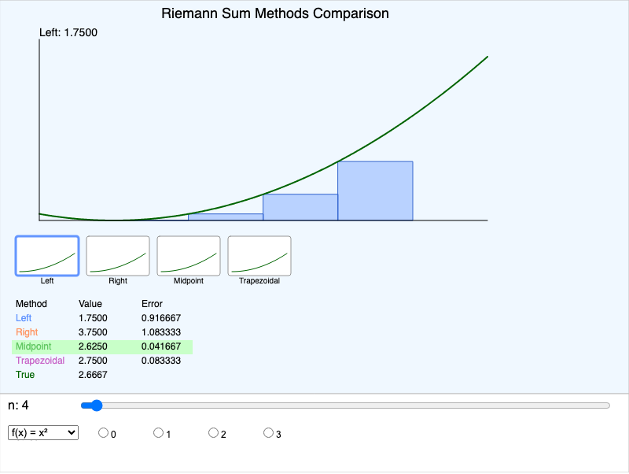
Compare left, right, midpoint, and trapezoidal Riemann sum methods.
-
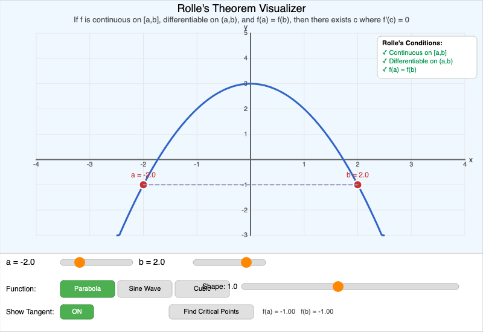
Interactive visualization of Rolle's Theorem showing guaranteed existence of horizontal tangent lines.
-
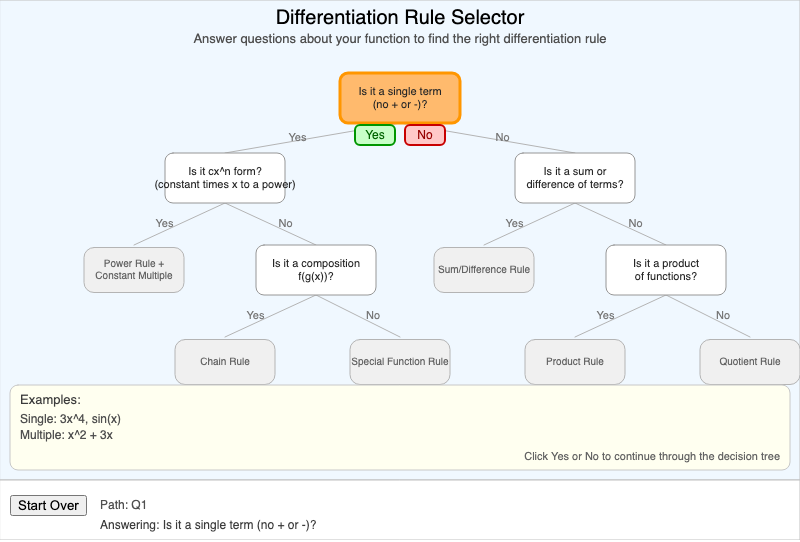
An interactive decision tree that helps students choose the appropriate differentiation rule.
-
Secant Lines Approaching Tangent Line
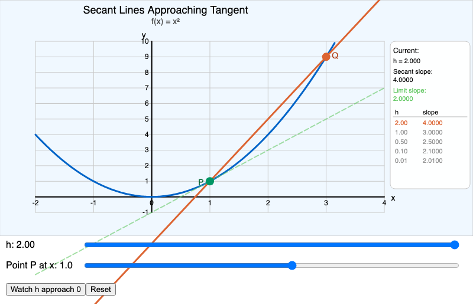
Interactive visualization showing how secant lines approach the tangent line as h approaches 0.
-
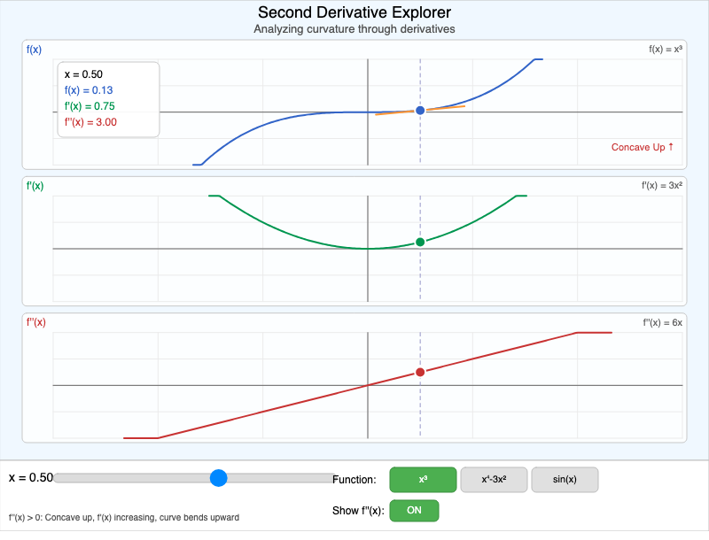
Interactive visualization showing f(x), f'(x), and f''(x) in three synchronized panels.
-

Interactive MicroSim that helps students understand sigma notation by expanding sums and calculating totals step by step.
-
Construct sign charts for derivatives to determine intervals of increase and decrease.
-

Understand the fundamental trigonometric limit using unit circle and graph visualizations.
-

Students construct function graphs given only derivative information.
-

Interactive MicroSim showing when an object speeds up vs slows down based on velocity and acceleration signs.
-
Interactive demonstration of how the Squeeze Theorem pins down limit values.
-

Given a function and a point, shows step-by-step calculation of the tangent line equation.
-

An interactive MicroSim showing how polynomial differentiation works term by term.
-
Three Connected Graphs Explorer

Interactive visualization showing f(x), f'(x), and f''(x) simultaneously with synchronized cursor.
-

An interactive timeline showing 2300 years of calculus development.
-
Transcendental Integral Practice
Interactive practice with transcendental integrals including trig, exponential, logarithmic, and inverse trig functions.
-
Manipulate a, b, h, k parameters to transform parent functions and see the effects in real-time.
-

Interactive visualization showing the cyclic pattern of trigonometric derivatives.
-
Interactive flashcard-style reference for memorizing derivatives of the six trigonometric functions.
-

Manipulate amplitude, period, phase shift, and vertical shift for trigonometric functions.
-
See the Pythagorean identity sin^2 + cos^2 = 1 geometrically using the unit circle.
-
Interactive reference showing all six basic trig integrals with visual connections to their derivatives.
-

Interactive visualization examining how the rate of distance change between two moving objects depends on their positions and velocities.
-

Interactive step-by-step guide to applying u-substitution for evaluating integrals.
-

Explore the relationship between angles and sine/cosine values with connected graph visualizations.
-
Verification Methods Comparison

An interactive MicroSim that helps students judge which verification method is most appropriate for different optimization scenarios.
-
Interactive visualization showing how one-sided limits determine function behavior near vertical asymptotes.
-

Interactive tool for testing whether graphs represent functions using the vertical line test.
-
An interactive MicroSim demonstrating that sufficiently zoomed-in views of differentiable functions appear linear.
About MicroSims
MicroSims are lightweight, interactive educational simulations designed for browser-based learning. Each MicroSim:
- Focuses on a single learning objective
- Provides immediate visual feedback
- Works on any device with a modern browser
- Can be embedded in any webpage via iframe
All MicroSims in this course use open-source JavaScript libraries (primarily p5.js) so students can view the source code and learn from the implementations.
Total MicroSims: 123